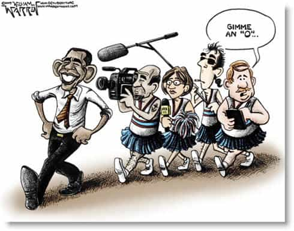

Daryush "Roosh" Valizadeh created ROK in October 2012. You can visit his blog at RooshV.com or follow him on Twitter and Facebook.


The charade of the left-right political spectrum is being fully revealed as American and European “conservative” politicians and media pundits continue to be outed as sellouts who serve liberal interests above conservative interests. In the political arena, left versus right is an artificial theater constructed to trick the public that opposing forces are battling it out or compromising for the good of the nation. In reality, both sides are controlled by the same group of elites.
If you voted for a Democrat slate, thinking the Democrats were looking out for you, or if you voted a Republican slate, thinking that Republicans were looking out for you, you were tricked. You voted for the same puppet masters who stand behind both parties and ensure that their globalist and collectivist vision of the world is achieved. Their aims are to maximize their power and wealth while satisfying whatever sinister agenda they may have in the name of “world order,” which includes depopulation.
Even though my views have become more traditionally conservative over the years, I never saw Republicans as the party that represented them. How could I when they support homosexual marriage, feminism, and even open-borders immigration? On the big issues—the ones that determine the fate of a country—the Democrats and Republicans match almost exactly. This is because they are sponsored by corporations and billionaires with similar agendas and cravings for globalization, hedging their bets between the sponsored candidate in blue or the sponsored candidate in red. Every US Presidential election has had sponsored candidates on both sides, meaning that to those with real power, it barely matters who wins.
Establishment candidates believe in the globalist platform:
All the while, we are not allowed to select a candidate with a nationalist platform:

It’s very possible to put a conservative and liberal in the room but have them completely agree on multiculturalism, immigration, democracy, and transgenderism, though disagree on more hot-button topics like abortion and gun rights. They can agree at least half of the time because they both share a primarily globalist belief system, even when they may see each other as enemies. On the other hand, if you get a globalist and nationalist in the same room, they will disagree on more than 80% of issues, even including the basics such as the proper system of government.
While mainstream liberals tend to lean globalist, and mainstream conservatives tend to lean nationalist, the dividing line between them is becoming more narrow as nationalist views are prevented from being properly discussed in the public sphere. Soon, it will be impossible to tell liberals and “conservatives” apart. The only true dividing line left is globalism versus nationalism, especially since nationalism has not yet been co-opted by the elite, and is seen by them as the only real threat that could sever their heads.
I’m firmly in the nationalist camp, even though I am a man of mixed race who does not have an ancestral nation he can call home (I’m half Persian and half Armenian). If you’re wondering how the product of the Immigration And Nationality Act of 1965 can become nationalist, I’ll tell you: globalism greatly harms heterosexual native-born men such as myself. Before I even knew what globalism was, I empirically identified all of its tentacles and how they greatly inhibit a man’s masculinity, life purpose, and pursuit of happiness. Therefore I firmly believe that a heterosexual man who is a minority, like myself, will fare better in a nationalist country than in a globalist one, where he will definitely be swept up by degenerate winds that either make him a social justice zombie or get him persecuted for merely behaving as a man.
My nearly three years of living in a mostly nationalist country, Poland, confirmed to me that nationalism is the most natural state for man. I saw firsthand how a country that leans towards globalism becomes a more toxic environment for men and women, encouraging them to effectively destroy themselves for short-term pleasure and material gain. Nationalism, not to be confused with ultra-nationalism, promotes a more meaningful human existence by using morality, virtue, and genetic identity as building blocks for society, and so therefore serves as a more compatible operating system for human beings.

The American media will go off on left versus right controversies all day long, and make a big show of various battles between them, because the open discussion of these issues do not harm globalist platforms. Once you understand that conservative outlets like Fox News and National Review are globalist, not nationalist, you can realize how an entire belief system has been concealed from you. Whenever a nationalist idea is shared in the media, there is a quick and vicious condemnation of it as “far right,” “extreme right,” or “radical right.” Anything that is not labeled these three terms is a safe idea that does not harm globalist concerns.
When I mentioned late last year that the narrative is collapsing, I was referring to the globalist narrative. The only belief system that can fill that vacuum is nationalism, and the question that remains is how fascist the new nationalism will become. Neomasculinity, a model of patriarchy that is compatible with nationalism (if not outright essential for its success), is a vehicle that can serve men of various backgrounds, as long as minority men such as myself understand that they must follow the rules of any homogeneous population they find themselves in. I did that in Poland and can continue to do that in the future, because I know that if you believe in masculinity and the traditional ideas that are compatible with a life of meaning, nationalism is a better outcome for you that the globalist nightmare that many Western men find themselves trapped in today.
 If you like this article and are concerned about the future of the Western world, check out Roosh's book Free Speech Isn't Free. It gives an inside look to how the globalist establishment is attempting to marginalize masculine men with a leftist agenda that promotes censorship, feminism, and sterility. It also shares key knowledge and tools that you can use to defend yourself against social justice attacks. Click here to learn more about the book. Your support will help maintain our operation.
If you like this article and are concerned about the future of the Western world, check out Roosh's book Free Speech Isn't Free. It gives an inside look to how the globalist establishment is attempting to marginalize masculine men with a leftist agenda that promotes censorship, feminism, and sterility. It also shares key knowledge and tools that you can use to defend yourself against social justice attacks. Click here to learn more about the book. Your support will help maintain our operation.
Read Next: Letter From A Member Of The Global Elite